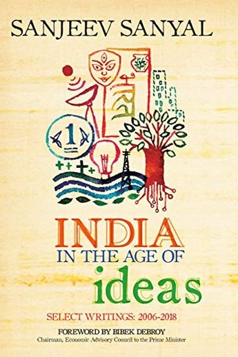

Library › Business & Startups
India in the Age of Ideas — Summary & Key Lessons

A contrarian economist's history of how ideas shaped — and can reshape — India.
📖 OPEN THE FULL INTERACTIVE BREAKDOWN →🌐 Read it in Hindi, Hinglish, Gujarati, Tamil & 22 more languages — free, with audio.
💡 The Big Idea
Conventional histories see India as a victim of geography and conquest. Sanyal argues the opposite: India was often at the centre of the world — an export powerhouse with sophisticated institutions — and its decline came from bad ideas and decaying institutions, not bad luck. The lesson for today: nations, companies and people rise and fall on the quality of their ideas and the institutions that carry them.
🧠 The 6 Key Lessons
Lesson 1: Ideas Move the World — Literally
Trade and Ideas
Sanyal traces how Indian ideas — mathematics, astronomy, textiles, religion — travelled along monsoon trade routes to reshape the world. Indian numerals reached Europe via Arab scholars; Indian fabrics defined global fashion for centuries. The lesson: exportable ideas are the ultimate product. The nations and people who create frameworks — not just goods — set the agenda for everyone else.
📖 Example: The zero, decimal notation and trigonometry crossed the Indian Ocean and eventually powered European science — India's greatest export was intellectual. Read the full example →
⚡ Do this: What idea could you 'export' from your field — a framework, a method, a perspective? Write one down and share it somewhere this month.
Lesson 2: Institutions Are Memory — Build Them Well
The Institutional Skeleton
Sanyal shows how India's great periods — the Mauryas, the Cholas, the Mughals — were built on institutions: revenue systems, navies, courts, market networks. When institutions decayed, empires collapsed despite having the same territory and people. The lesson: individuals are powerful, but institutions make results durable. A great idea without an institution is a firework; with one, it's a furnace.
📖 Example: The Chola navy and the Mughal revenue system outlived their founders and powered centuries of prosperity — until decay from within undid them. Read the full example →
⚡ Do this: Identify one 'institution' in your life — a team process, a family ritual, a personal system. Strengthen one element of it this month.
Lesson 3: Geography Is a Starting Point, Not a Sentence
Geography and Destiny
Sanyal rejects geographic determinism: the same coasts and monsoons that made India prosperous were later blamed for its poverty. Geography sets the board; ideas play the game. The lesson: your starting conditions matter less than your response to them. Every person and company has a 'geography' — industry, background, location — but the ones who win are those who stop treating it as destiny.
📖 Example: India's long coastline was an economic superhighway for millennia; the same coastline became an 'obstacle' only after ideas about trade turned inward. Read the full example →
⚡ Do this: Write down your 'geography': your industry, location, background. List one way you can turn each from an excuse into a platform.
Lesson 4: Cities Are Idea Engines
The Urban Core
Sanyal's history is largely urban: ports, capitals and temple towns were where ideas collided and wealth concentrated. The lesson: density creates creativity — proximity, mixing and argument produce breakthroughs that scattered populations can't. For individuals: put yourself in rooms where ideas collide. The most important career move is often a city, a community or a conference — not a course.
📖 Example: Every Indian golden age had its engine city — Pataliputra, Thanjavur, Surat, Calcutta — where merchants, scholars and rulers argued and built together. Read the full example →
⚡ Do this: Identify one 'collision zone' you can join — a meetup, a community, a workspace — and attend twice this month.
Lesson 5: Entrenched Ideas Outlast Armies
The Persistence of Dogma
Sanyal shows that bad ideas — economic self-sufficiency, suspicion of trade, caste rigidity — persisted for centuries even after their costs were obvious. The lesson: the hardest enemy to defeat is not a competitor but an entrenched belief. Changing minds requires more than facts; it requires new narratives, new incentives and patient persistence. Don't expect truth to win on its own — it needs advocates.
📖 Example: India's inward turn and the decay of its institutions took centuries to complete, driven by ideas that had become self-reinforcing dogma. Read the full example →
⚡ Do this: Identify one outdated belief you hold that evidence contradicts. Find one counter-example and spend 10 minutes updating your mental model.
Lesson 6: History Is a Toolkit, Not a Museum
The Uses of the Past
Sanyal's method — using history to question present assumptions — is itself the lesson. He uses the past not for nostalgia but for alternatives: 'if India was once a trading superpower, what changed, and what can change again?' The lesson: the past is a laboratory of experiments you can learn from without paying their tuition. Study failures and successes — your own and others' — as data, not as identity.
📖 Example: By showing India's mercantile past, Sanyal reframes modern globalization as a return to form, not a foreign imposition. Read the full example →
⚡ Do this: Pick one past failure of yours and one past success. Extract one lesson from each and apply both to a current decision.
✅ 5-Step Action Plan
- Draft one idea from your field and share it publicly this month.
- Strengthen one institution you depend on — a team process or personal system.
- Turn one element of your 'geography' from excuse into platform.
- Join one idea-collision zone and attend twice this month.
- Update one outdated belief with evidence, deliberately.
⚠️ When This Doesn't Work
Sanyal's 'ideas and institutions, not geography, decide India's fate' is the most contrarian Indian history ever — and Dunzo is the modern case his framework predicts: the startup that India's most innovative ideas built — hyperlocal delivery before it was a category — collapsed because the institution (unit economics, capital discipline) couldn't carry the idea. Sanyal's book shows ideas need institutions; Dunzo shows the same in reverse — a great idea with a weak institution is a great idea with a short life. The caveat: the idea is the seed; the institution is the soil. India's next golden age needs both, and the institutions are the harder half.
💀 The Graveyard Proves It
🛵 Dunzo — Bengaluru's Beloved Delivery App That Delivered Itself to Ruin. Burn: Peak ~$775M valuation → unpaid salaries, near-zero; 80% layoffs. Read the full case study →
💬 Best Quotes from India in the Age of Ideas
- “The rise and fall of nations is ultimately a story of ideas and institutions.”
- “India was not a passive victim of history; it was often an active participant.”
- “An idea, once entrenched, is harder to dislodge than an army.”
Interactive version: mark lessons as read, listen in your language, share quote cards.